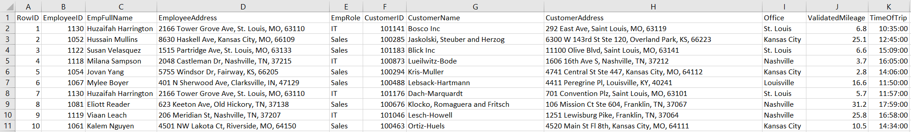
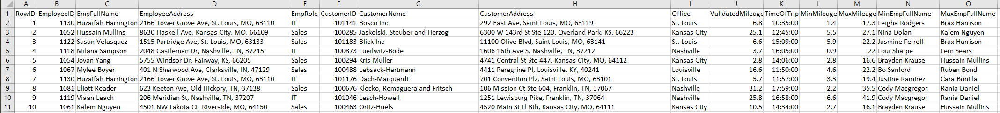

Analytics mindset
Fairview Inc.
Extract, transform and load (ETL)
Overview
You work as a corporate accountant for Fairview Inc., a software-as-a-service (SaaS) company. Fairview Inc. uses a unique “high-human-touch” sales and servicing model. That is, Fairview Inc. sells only within certain cities and hires numerous sales agents and information technology (IT) agents in each city where it operates. The company then has these employees visit the customers and provide face-to-face sales and support.
The model has been successful so far and Fairview Inc. now operates in five cities in the Midwest of the United States: Indianapolis, Kansas City, Louisville, Nashville and St. Louis. Each city has a physical office staffed by a manager and customer support representatives. The office manager is responsible for and oversees all work done in the office. The customer support representatives field calls and send sales agents and IT service representatives to visit clients. When a customer support representative receives a call, they cycle through a list of employees in assigning workers to customers, assigning the employee who has not performed the task for the longest time. That way, every employee has an equal opportunity to visit customers. The customer service representative keeps a separate list of sales agents and IT service representatives.
Fairview Inc. pays employees for the time they spend visiting customers. The company also reimburses employees when they travel to a customer’s business since employees use their own vehicles for transportation. After the trip, the employee submits their mileage for reimbursement. The employee submits their home address, the customer address and their self-reported mileage that they traveled to visit the customer. The company then reimburses the employee using the Internal Revenue Service (IRS) standard mileage rate.
The CFO at Fairview Inc. wants to perform a comprehensive review of the reimbursement process. This includes having one team analyze the process to look for automation possibilities, having Internal Audit conduct an audit of the program and look for internal control deficiencies and potential fraud, and having another team analyze the process for efficiency gains. To perform the analyses, each group will need data. While each group will need a slightly different set and structure for the data, each will start with a basic data file. Your task is to prepare the basic data file for these analyses. As you prepare this file, you should make the process repeatable, so that when the IT Department pulls new files, your workflow will be able to automatically update and create a new basic data file.
The IT Department extracted the data from the company’s IT systems and has prepared files that you will manipulate to prepare your final file. The IT Department has pulled together a list of the trips for the previous year. In total, employees sought reimbursements for 4,888 trips at a total cost of $39,658.61. Note that the IT Department has pulled several versions of different files. Depending on the assignment noted below, you will use these different files. The files and an explanation are as follows:
The file, Analytics_mindset_case_studies_FairviewInc_ETL.xlsx, contains eight sheets of data. The sheets are as follows:
Trips: sheet lists the address of the employee, the customer address, the office of the employee and the time of the trip. The only information that is meaningful in the TimeOfTrip column is the actual time (sometimes programs add in date information to time fields, but this has no meaning in this data).
EmployeeData: sheet lists information about the employee, including their first and last name, employee address, office and their role (either Sales or IT).
CustomerData: sheet lists the name of the customer’s company, the customer address and the office to which they belong.
Sheets: Indianapolis, KansasCity, Louisville, Nashville and StLouis: Sheets each contain a matrix that shows the customer and employee addresses and the distances between every address.
Analytics_mindset_case_studies_FairviewInc_ETL_Indianapolis.csv file. This file contains the same information as the Indianapolis sheet in the Analytics_mindset_case_studies_FairviewInc_ETL.xlsx file. The only difference is that some columns of information may be duplicated.
Analytics_mindset_case_studies_FairviewInc_ETL_KansasCity.csv file. This file contains the same information as the Indianapolis sheet in the Analytics_mindset_case_studies_FairviewInc_ETL.xlsx file. The only difference is that the employee address listed on the first row in the Analytics_mindset_case_studies_FairviewInc_ETL.xlsx file is split onto two lines in the Analytics_mindset_case_studies_FairviewInc_ ETL_KansasCity.csv file.
Analytics_mindset_case_studies_FairviewInc_ETL_StLouis.csv file. This file contains the same information as the St. Louis sheet in the Analytics_mindset_case_studies_FairviewInc_ETL.xlsx file. The only difference is that the employee addresses use delimiter and text qualifiers that are different from the rest of the file.
Analytics mindset
Having and using an analytics mindset is critical in accounting and business. An analytics mindset is the ability to:
Ask the right questions
Extract, transform and load (ETL) relevant data
Apply appropriate data analytics techniques
Interpret and share the results with stakeholders
In this case, using an analytics mindset means properly analyzing the data files and deciding the correct way to perform the ETL procedures on the data.
Required
This assignment is broken into three parts. The parts build upon each other — once you finish Part 1, you can edit that file to finish Part 2, which, in turn, can be edited to finish Part 3. Each of your solutions must be “automated.” In this way, if the company were to change any of the trip data, or were to change the mileage between employees and customers, your solution could be run again and to create the final file with minimal effort (i.e., manually editing the data in Microsoft Excel is not an acceptable solution).
Part 1
You should only use the Analytics_mindset_case_studies_FairviewInc_ETL.xlsx file for this part. Transform the data so that your final output is an Excel file called “Solution Part 1_StudentName.xlsx.” The first few rows of the file should look as follows:

The columns are the same as in the sheets in the Analytics_mindset_case_studies_FairviewInc.xlsx file. The ValidatedMileage field (column J in the image above) is the distance listed on one of the city sheets between the employee and customer address.
Save your solution file as “Solution Part 1_StudentName” with whatever extension is used for the software you choose.
Part 2
Part 2 builds on Part 1. Copy the solution to Part 1 and continue building on this copied file to build the solution to Part 2. Like Part 1, you should only use the Analytics_mindset_case_studies_FairviewInc_ETL.xlsx file for this part. Transform the data so that your final output is an Excel file called “Solution Part 2_StudentName.xlsx.” The first few rows of the file should look as follows:

The columns are the same as in the sheets in the Analytics_mindset_case_studies_FairviewInc_ETL.xlsx file. The ValidatedMileage field (column J in the image above) is the distance listed on one of the city sheets between the employee and customer address. The fields MinMileage and MaxMileage contain the distance from the customer to the closest and farthest employee, respectively. The fields MinEmpFullName and MaxEmpFullName contain the name of the employee who is closest to or farthest from the customer, respectively. If two employees are the exact same distance away, you should always return the employee who is listed first alphabetically by the employee address (sorted in ascending order).
Save your solution file as “Solution Part 2_StudentName” with whatever extension is used for the software you choose.
Part 3
Part 3 builds on Part 2 and, thus, Part 1. The output for Part 3 should look identical to the output for Part 2. In Part 3, the company realized that the CSV data files for Indianapolis, Kansas City and St. Louis are structured differently from what is listed in the Analytics_mindset_case_studies_ FairviewInc_ETL.xlsx file. Thus, your solution to Part 3 must use these three alternative CSV data files rather than the similar sheets in the Analytics_mindset_case_studies_FairviewInc_ETL.xlsx file. The specific problems in each file are as follows:
Indianapolis data:
There are duplicate rows for 12 customers. A duplicate contains the exact same information for all information on the row.
Kansas City data:
The address of each employee is on the first two lines, instead of just the first line. On the first line is the street address, on the second line is the city, state and ZIP code information.
St. Louis data:
The data uses piped delimiters after the first row. However, the delimiters not only separate the mileage, but also the information in the customer address. That is, the street address, city, state and ZIP code are also separated by pipes.
Save your solution file as “Solution Part 3_StudentName” with whatever extension is used for the software you choose.
Overall deliverables to submit for grading:
The packaged analytics workbook solution for each part (i.e., three files). Include your name at the end of each of the file names.
The Excel solution output file for each part (i.e., three files). Include your name at the end of each of the file names.